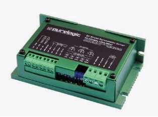

Драйвер серводвигателя ( сервомотора )
Рассмотрим пример драйвера для щёточного сервомотора.
Некоторые драйверы представляют собой блок управления двигателем постоянного тока (с возбуждением от постоянных магнитов) В качестве обратной связи по позиции и скорости используется энкодер с TTL сигналами SIN и COS. Способ задания позиции PULS/DIR (STEP/DIR).
За основу взят алгоритм ПИД (пропорционально-интегрально-дифференцирующего) регулирования с настройкой характеристик ПИД регулятора. Кроме того, обеспечивается корректировка рабочего момента ЩСД(драйвер щёточного серводвигателя).
Технология драйвера предусматривает применение умножителя частоты входного сигнала задания позиции PULS (STEP). Так называют генераторы с внешним возбуждением, у которых колебательный контур настраивается на частоту, которая кратна частоте входного сигнала. Такая технология даёт возможность применять низкие частоты управления, чтобы обеспечить необходимую быстроту вращения драйвера щёточного серводвигателя, используя энкодер с высоким разрешением.
Такой модуль оборудован защитами от короткого замыкания в обмотке якоря двигателя, а также от неправильной полярности напряжения питания. Предусмотрена компенсация обратной ЭДС якоря.
В некоторых драйверах используется стандартный способ управления STEP/DIR. На входах драйвера используется оптоизоляция, входы совместимы с логическими уровнями 3,3В; 5В; 12В.
При амплитуде управляющего сигнала более 5 вольт придется установить дополнительные токоограничивающие резисторы.
Сигнал DIR задает направление перемещения. Сигнал STEP – задает величину перемещения, кратную количеству поданных импульсов на вход STEP.
Предусматривается выдача сообщения поломки и получение сигнала о запуске устройства.
Драйвер может использоваться для управления двигателем постоянного тока с напряжением питания от 20 до 80В. Разрешение энкодера больше или равно 250 импульсов за один оборот. Драйвер может контролировать состояние энкодера. В случае обрыва кабелей выдаётся ошибка.
Подключения производятся после отключения питания. Необходимо соблюдать полярности подключения управляющих сигналов и источника питания.
Не допускается монтаж выключателя питания после источника, на линии питания драйвера. Следует устанавливать размыкатель со стороны 220В, до источника питания.
Инструкцией предусматривается параллельное соединение нескольких блоков. Последовательное подключение драйверов по питанию и соединение минуса источника питания с заземлением или массой не допускается.
Прокладка шин питания ведётся с использованием многожильных медных кабелей. Применяется провод сечением не менее 1,5 мм2.
Подключение серводвигателя
Напряжения питания ЩСД для драйвера должны составлять от 18 до 80 Вольт. Используется постоянный ток.
Сначала модуль отключается от электросети, отключается источник сигнала STEP. Регуляторы устанавливаются на двенадцать часов. Выполняется подключение двигателя к контактам драйвера PLD2080s. Далее подключаем 4 провода кабеля энкодера и после управляющие сигналы на контакты COMM, STEP, DIR.